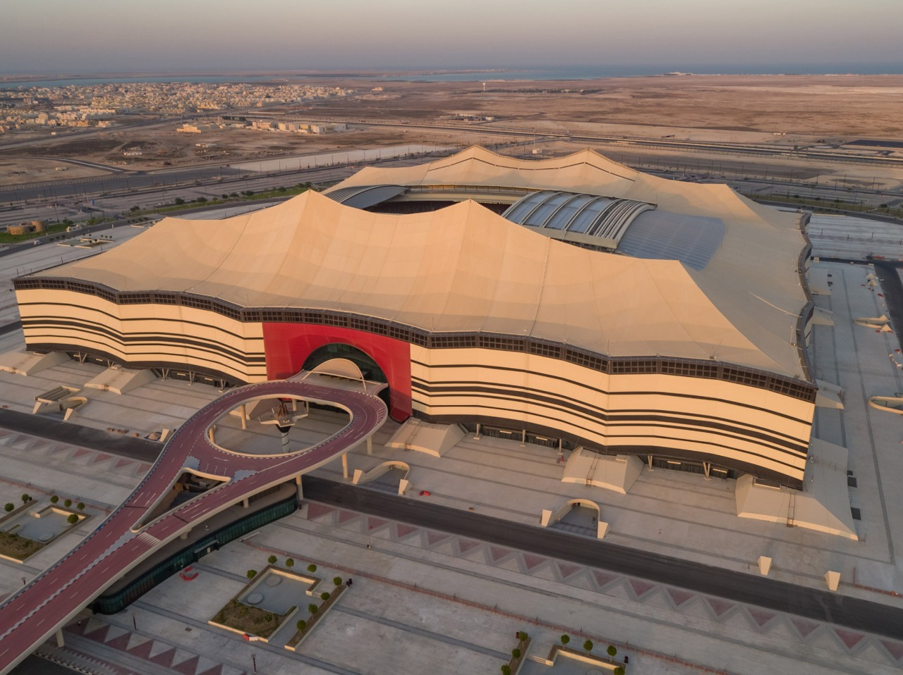

Qatar
O Catar é um país árabe localizado na Ásia Ocidental. Atualmente, é considerado o país mais rico do mundo, tendo à frente da sua economia a exportação de petróleo.
Catar (ou Qatar, na transcrição internacional) é um país do Oriente Médio, pequeno em extensão e grande economicamente. O país árabe, oficialmente chamado de Estado do Catar, corresponde a um emirado, ou seja, é um território administrado pelo membro da classe dominante, o emir.
O país localiza-se na península arábica na Ásia Continental, correspondendo a uma área de aproximadamente 11.610 km2 até o norte do Golfo Pérsico. O Catar faz fronteira com a Arábia Saudita e é separado por um estreito do Golfo Pérsico do país Bahrein.
Acesse o link https://mundoeducacao.uol.com.br/geografia/catar.htm e conheça melhor o país cede da Copa do Mundo 2022.